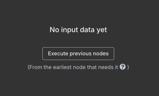

我在現實生活中用 n8n 開外掛(1) - 在本地環境安裝 n8n
目錄
前言 #
n8n作為一套自動化管理工具，目前在GitHub上有超過 4 萬顆星星，十分火熱，而肥宅我也想朝聖，一睹n8n
的魅力，於是有了這些筆記的出現。這一系列的文章會是提供給應用程式開發已有基礎的朋友們，讓你們能夠快速上手n8n
的使用，並且能夠在日常生活中使用n8n來幫助完成工作。
使用工具 #
在這邊文章中，我們會使用這些工具在本地安裝並且設定n8n。
- 容器管理工具：Docker + Docker Compose，MacOS
上也可以使用 OrbStack
OrbStack是一個 輕量級的Docker替代品，它可以在MacOS上以更快的啟動速度和更少的資源佔用來執行Docker，然而所有可以在Docker上執行的容器操作，OrbStack也可以使用。時至今日目前只有版本可以使用。
- 準備你的編輯器，可以是 VSCode 或者是 JetBrains 的 IDE
拿出你的鍵盤吧！ #
容器配置圖 #
如下圖，n8n與postgresSQL是我們預計啟用的 Docker containers，在使用者的工作過程中，n8n 會寫入或讀取資料於資料庫
postgresSQL上。
當我們啟動n8n後，可透過瀏覽器訪問n8n的工作介面，並且在上面設置工作流程，這些工作流程會在n8n的容器中運行。
開始安裝 #
-
下載 Docker Desktop，並且安裝。
-
建立一個空白專案資料夾並新增下列檔案給 Docker 容器配置使用。Docker 配置檔案是從
n8n官網取得，如需瞭解更多，請參考這裡。.env #
# Database Configuration # PostgreSQL 資料庫的管理者帳號 POSTGRES_USER=n8n # PostgreSQL 資料庫的管理者密碼 POSTGRES_PASSWORD=n8npass # PostgreSQL 資料庫的名稱 POSTGRES_DB=n8n # PostgreSQL 資料庫的連線 port POSTGRES_PORT=5432 # n8n Configuration # n8n 對外的連接埠 N8N_PORT=5678 # n8n 的 Webhook URL WEBHOOK_URL=http://localhost:5678.env檔案是用來設定所有Docker容器的環境變數，當容器啟動時會讀取這些環境變數給n8n使用。docker-compose.yml #
services: # postgresSQL 資料庫 postgres: image: postgres:15.3-alpine restart: always ports: - "${POSTGRES_PORT:-5432}:5432" environment: POSTGRES_USER: ${POSTGRES_USER:-n8n} POSTGRES_PASSWORD: ${POSTGRES_PASSWORD:-change_this_password} POSTGRES_DB: ${POSTGRES_DB:-n8n} volumes: - n8n_postgres_data:/var/lib/postgresql/data networks: - n8n_network # n8n 自動化工作管理工具 n8n: image: n8nio/n8n:latest restart: unless-stopped ports: - "${N8N_PORT:-5678}:5678" environment: # n8n 主機之設置 - N8N_RUNNERS_ENABLED=true - N8N_HOST=${N8N_HOST:-localhost} - N8N_PORT=${N8N_PORT:-5678} - WEBHOOK_URL=${WEBHOOK_URL:-http://localhost:5678} - GENERIC_TIMEZONE=Asia/Taipei - TZ=Asia/Taipei depends_on: - postgres volumes: - n8n_data:/home/node/.n8n networks: - n8n_network networks: n8n_network: name: n8n_network driver: bridge volumes: n8n_data: name: n8n_public_datadocker-compose.yml是用來定義Docker的容器配置。這些檔案會在容器啟動時被讀取並且應用到n8n的運行環境中。 -
執行指令啟動 n8n 容器
在背景啟動n8n與postgresSQL的容器：$ cd <專案資料夾> && docker-compose up -d執行完成後，可以執行下列指令來檢查容器是否成功啟動：
$ cd <專案資料夾> && docker compose ps如果容器啟動成功，在回應的訊息中，如紅色框框中所示那樣，狀態為
Up：
容器啟動成功圖示 到這一步為止，若容器成功啟動，那麼安裝就已經完成了。

訪問 n8n #
點擊這裡，或是在瀏覽器的網址列輸入http://localhost:5678，即可進入n8n的工作介面。
初始設定 #
當你第一次進入n8n的工作介面時，系統會要求建立一個 Owner account，這個帳號會是你在使用n8n時的管理者帳號。

接著可以忽略調查n8n的問卷，直接點擊Get Started即可。

免費取得永久付費特權，也是可選的步驟。

進入工作介面 #
當你完成上述的步驟後，就可以進入n8n的工作介面了。

在這邊你可以按下左上角的+、右上角的create workflow按鈕，或是中間的Start from scratch來建立新的工作流程。
quickstart 範例 #
現在我們參考官網的範例：Very quick quickstart，來認識一下n8n
。這個範例介紹了一些主要特點：工作流程模板（Workflow templates）、節點（Nodes）與表達式（Expressions）。
Workflow templates）是由n8n官方或社群成員設計的預建立工作流程，你可以將其導入到你的專案中。
Nodes）是用來創建工作流程的組件。節點定義了工作流程何時運行，處理數據，定義控制邏輯，並且可以連接外部服務。
Expressions）可以讓你在n8n的工作介面中注入參數以執行一小段Javascript程式碼。
STEP.1 複製工作流程模板 #
-
我們先從n8n官方的樣版庫找到quickstart模板，然後 在網頁中點擊左側的
Use for free按鈕。
Very quick quickstart -
在彈出的
Use template視窗中，點擊Copy template to clipboard[JSON]按鈕，將範本內容複製到剪貼簿。
複製範本 -
接著回到
n8n的工作介面，點擊右上角的create workflow按鈕，在畫布上直接按下Ctrl/Command + V，將剛剛複製的範本貼到畫布Canvas上，接著按下Ctrl + S或是右上方儲存按鈕，將本次異動存檔。
右上角紅框處可以為工作流程改名稱，Add tag則可以為工作流程設置標籤，以便快速搜尋。
貼上範本


STEP.2 執行工作流程 #
按下模板上Test workflow按鈕，即可執行這個工作流程，執行完成時系統會自動通知成功的訊息，且各個節點會在成功通過時標注一個綠色勾勾。

STEP.3 認識工作流程 #
以下我們先逐個說明各個節點：
-
Sticky note
用來做為備註的便利貼，可以在畫布上隨意拖曳、改變大小與顏色。這個元件不會影響工作流程的運行。當滑鼠游標移動到便利貼時，會出現調色盤與垃圾桶的符號，可以用來調整顏色與刪除便利貼。
便利貼 將滑鼠移動到最右側的
+符號上，會浮現一個小的新便利貼的按鈕在+下方，點擊這個按鈕就會新增一個便利貼。直接按下快速鍵Shift + S也可新增一個便利貼。
新便利貼 -
Trigger Manually Node手動觸發器節點。任何一個觸發器節點意味著工作流程起始之處。當模板中有手動觸發器節點時，模板上會出現Test workflow按鈕。
-
Customer Database(n8n training)客戶數據資料庫節點。此節點僅用於n8n新用戶入門教學。它提供用於測試目的的虛擬數據，沒有其他功能。
-
Edit Fields (Set)資料編輯節點。此節點用於修改數據的欄位。當工作流程運行時，這個節點會將前一個節點輸出的數據進行修改。


STEP.4 一點點變化 #
現在我們來修改一下工作流程，跟著官網的範例來加入一個新的節點：Customer Messenger。
-
點擊
Edit Fields (Set)右側的+按鈕，然後在搜尋欄中輸入Customer Messenger，找到這個節點後點擊它。
新增 Customer Messenger 節點 -
點擊後會直接開始編輯
Customer Messenger的內容。左側input面板中的Schematab會載入前面節點的輸出資料。 若左側
若左側input面板顯示了No input data yet，代表目前從未執行過工作流程，這時只要點擊Execute previous nodes按鈕，先執行過前面的工作流程，這樣就會有資料進來了。 沒有資料時的提示 -
自左側
input面板上，拖曳Edit field1>customer_id至中間面板的Customer ID欄位中，這時會自動填入一些文字{{ $json.customer_id }}，代表n8n為我們填入一個表達式，目的是引用自上一個節點傳入的數值。
拖曳 customer_id 至 Customer ID 欄位 -
將滑鼠移到中間面板的
Message欄位並停在上面，會發現欄位的右上角出現兩個按鈕fixed與expression，點擊expression按鈕後，欄位前面會長出一個fx的區塊，代表我們可以在欄位中輸入表達式。
將這段內容填入到欄位中，這時下方Result區塊也會動態地產生可能的輸出內容：Hi {{ $json.customer_name }}. Your description is: {{ $json.customer_description }} -
直接點擊中間面板的
Test step按鈕，這時會看見右側output面板中出現了輸出結果，這個結果會是我們剛剛在Message欄位中輸入的表達式所處理後的結果。


小結 #
在這篇文章中，我們學習了如何在本地環境安裝n8n，並且簡單地認識了n8n的工作流程、節點與表達式。接下來的文章中，我們將會深入探討如何使用n8n。